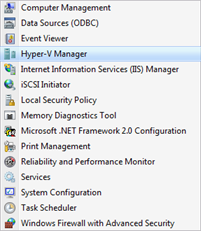

Managing Hyper-V Server
Translations:
It is more suitable to work with VHD and virtual machines on full Windows Server 2008 with Hyper-V role installed.
However, if you have remote Hyper-V Server 2008 or Windows Server 2008 Server Core installed you could use “Hyper-V Remote Management Update for Windows Vista (KB952627)”: http://www.microsoft.com/downloads/details.aspx?FamilyID=BF909242-2125-4D06-A968-C8A3D75FF2AA&displaylang=en
For 64-bit Vista:
http://www.microsoft.com/downloads/details.aspx?familyid=88208468-0AD6-47DE-8580-085CBA42C0C2&displaylang=en
Important notes regarding this update:
1. It doesn’t work on Windows Vista Home Basic or Premium editions.
2. You should enable “Administrative Tools” menu item:

To enable “Administrative Tools” menu right-click on Task Bar -> “Properties” menu item -> “Start menu” tab -> “Customize...” button.
{kind=link}
{kind=link}
For complete Windows Server 2008 remote management you could use “Microsoft Remote Server Administration Tools for Windows Vista (KB941314)”: http://www.microsoft.com/downloads/details.aspx?FamilyID=9ff6e897-23ce-4a36-b7fc-d52065de9960&displaylang=en
For 64-bit Vista:
http://www.microsoft.com/downloads/details.aspx?familyid=D647A60B-63FD-4AC5-9243-BD3C497D2BC5&displaylang=en
Important notes:
1. It requires Windows Vista Business edition or above
2. It requires Service Pack 1 installed.
In all our examples below we will be using full Windows installation with Hyper-V role installed.